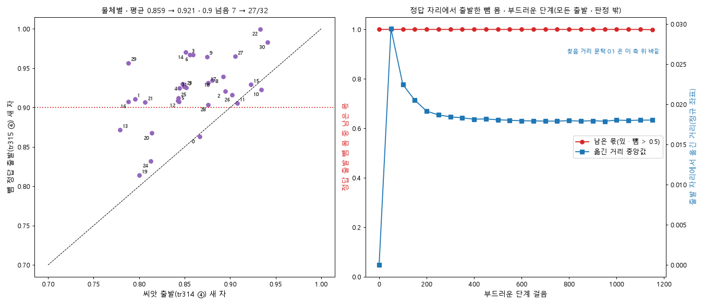

실험 m2_tr0315_h068_정답출발
목표 G1.2 view 모음 → 파츠별 CAD code(CadQuery · 그 전 「3 면도 → 파츠별 CAD」 · 지금 M2 는 위 · 앞 · 옆 고정 세 장만 받음 → 아무 각도 N 장으로 바꿀 것 · 11-20) · G1 첫 제품 — 피규어 · 메카 사진 여러 장 + 치수 → 숨은선 3 면도 + 파츠별 CAD · G0 임의의 이미지 → CAD 코드 · 빌린 가정 5: 정사영 · 시점앎 · 흰바탕 · 렌더화풍 · 정답3D · 갚는 계획: 진단 · 정답 만들기 — 껍데기를 그릴 어휘가 정해지면 그 어휘로 CAD code 정답 변환(m2 학습 · 비교는 그 뒤 카드) · 목표 시험지 값: 안 잼 (!)
tr313 · tr314 관문 ④(뺌 합성 정답 되맞춤 0.85 ~ 0.86)가 낮은 것은 맞춤이 뺌 몸을 못 찾아서인가 — 뺌 몸만 정답 자리 · 크기로 출발시키면 0.9 를 넘나?
| 가설 | 주장 | 결과 | 근거 |
|---|---|---|---|
| m2-H68 | 맞춤이 뺌 몸을 못 찾아서 ④ 가 0.9 아래다 — 뺌 몸을 정답에서 출발시키면 ④ 가 오른다 | 지지 | S6 합성 정답 32 · 뺌 몸만 정답 출발 ④ 되맞춤 새 자 평균 0.9214(≥ 0.9 → 지지) · 최소 0.8138 · 0.9 넘은 물체 27/32(tr314 7/32) · tr314 ④ 0.8588 대비 넷차 +0.0626 · 구간 [0.0484, 0.0761] · 오름 29 · 내림 3(물체 10 −0.0114 · 0 −0.0039 · 11 −0.0023) · 0.9 를 넘었다 떨어진 물체 0 · 0.9 아래 남은 물체 다섯(0 · 13 · 19 · 20 · 24 · 0.81 ~ 0.87) · 가장 큰 오름 물체 29 +0.1686 · 16 +0.1193 · 14 +0.1187 · 뺌 자리 74/93(tr314 28/93) · 남은 뺌 몸 평균 2.5 · 하네스 실패 0 · CAD 안 끝남 0 · 조용한 실패 0 · 판 폴더 0.05 GB · 판정 밖 자취: 정답 출발 뺌 몸 중 켜진 몫 처음 1.0 · 끝 0.999 · 출발 자리에서 옮긴 거리 끝 중앙값 0.018(정규 좌표) — 넷.json 두 판 물체별 · 자취 json 에서 셈 |
결정 표(돌리기 전에 정함)
- 만약 지지
다음 뺌 찾기가 원인 — 정답 없이 뺌 몸을 찾는 출발 · 맞춤 고침 카드 - 만약 기각
다음 뺌 찾기는 원인 아님 — 정답 뺌 몸을 줘도 안 오르면 더함 몸 쪽 · 몸 수 · 자(표면 F) 쪽을 봄 - 만약 약함
다음 숫자 그대로 적고 사용자와 고름
분석
한 줄로
물음: tr313 · tr314 의 관문 ④(뺌 합성 정답 되찾기 0.85 ~ 0.86)가 0.9 에 못 미친 것은 맞춤이 뺌 몸을 못 찾아서인가?
답: 뺌 몸의 출발을 정답 그대로(자리 · 크기 · 종류 · 축 · 몸 수) 주자 평균이 0.8588 → 0.9214 로 올라 문턱 0.9 를 넘었다. 0.9 넘은 물체는 7/32 → 27/32 다. m2-H68 지지. 뺌 몸의 처음 상태가 막힌 곳이다. 다만 그 다섯 가지 중 무엇 덕인지는 이 판으로 가르지 못한다. 정답에서 출발시킨 진단이라, 실제 물체에 그대로 쓸 수 있는 방법도 아니다.
왜 이 실험을 했나
tr313 은 몸마다 「뺌」(파내기)을 넣은 어휘가 자기 어휘로 만든 정답을 0.9 까지 되찾지 못해 막혔다. tr314 에서 일찍 버리기를 꺼도 0.8588 이었다. 그래서 「맞춤이 뺌 몸을 파인 곳에 못 놓는다」고 짐작했다. 사용자가 「확인이 가능한가, 가설인가」를 물었고, 지켜보기보다 직접 바꿔 보는 판을 먼저 돌렸다. 목표는 임의의 메시를 CAD code 정답으로 바꾸는 변환이다.
낱말 몇 개: ④ 는 본 판 전에 거치는 관문으로, 뺌 어휘로 직접 만든 합성 정답 32 개를 같은 맞춤이 되찾는지 본다. 뺌 몸 은 더한 몸에서 파내는 몸이다. 씨앗 은 입력에서 파인 곳을 찾아 뺌 몸을 처음 놓는 자리다. 찾음 은 끝에 남은 뺌 몸 가운데가 정답 뺌 몸 가운데에서 0.1 안에 있는 것이다.
바꾼 것 하나
뺌 몸의 출발만 정답으로 바꿨다. 파인 곳에 놓던 씨앗 넷 대신, 합성 정답에 든 뺌 몸(종류 · 축 · 자리 · 크기)을 그대로 놓고 출발한다. 물체당 1 ~ 8 개, 합 93 개다. 나머지 몸은 같은 씨의 무작위 출발이고, 그 밖의 설정은 tr314 의 ④ 와 같다.
결과

왼쪽에서 점 29 개가 대각선 위에 있고, 대부분 빨간 점선(0.9) 위로 넘어간 것을 보자. 오른쪽은 정답에서 출발한 뺌 몸이 부드러운 단계 동안 켜진 채 남은 몫(빨강)과 출발 자리에서 떨어진 거리(파랑)다(모든 출발 · 판정 밖).
| 정답 출발(이 실험) | 씨앗 출발(tr314) | 문턱 | 넘었나 | |
|---|---|---|---|---|
| 되맞춤 새 자 평균 | 0.9214 | 0.8588 | 0.9 | 예 |
| 0.9 넘은 물체 | 27/32 | 7/32 | — | — |
| 뺌 자리 찾음 | 74/93 | 28/93 | — | — |
| 하네스 실패 | 0 | 0 | 0 | 예 |
새 자는 정답 메시와 맞춘 메시의 표면 점이 서로 0.02 안에 드는 정도를 F 점수(0 ~ 1)로 잰 값이다.
왜 이렇게 나왔나
확인한 것
- 짝 차는 +0.0626 이고, 짝 부트스트랩 95 % 구간은 [0.0484, 0.0761] 로 0 위다. 이 구간은 물체 사이 흔들림만 담는다(한 번만 돌림).
- 32 개 중 29 개가 올랐다. 내린 셋(물체 10 · 0 · 11)은 −0.0114 ~ −0.0023 로 작다. 0.9 를 넘었다가 떨어진 물체는 없다.
- 가장 크게 오른 것은 물체 29(+0.17), 16 · 14(+0.12)다.
- 자취(모든 출발 · 50 걸음마다): 정답에서 출발한 뺌 몸 중 「있 · 뺌 둘 다 0.5 넘음」인 몫은 부드러운 단계 끝에 0.999 다. 출발 자리에서 떨어진 거리 중앙값은 50 걸음에 0.030 까지 갔다가 끝에 0.018 이다. 찾음 거리 0.1 보다 작다. 부드러운 단계 동안 자리는 크게 흐르지 않았다.
짐작 (아직 확인 안 함)
- 「켜진 채 남음」은 맞춤이 고른 결과라기보다 출발값이 남은 것일 수 있다. 출발 때 있 · 뺌 logit 을 +4 · +2 로 박아 두었다.
- 자취는 자리만 쟀다. 크기 · 종류 · 축이 흘렀는지는 재지 않았다.
- 정답 출발은 뺌 몸의 자리 · 크기 · 종류 · 축 · 몸 수를 함께 준다. 오른 몫이 그중 어느 것에서 왔는지는 나누지 못했다. 씨앗에서 출발한 뺌 몸이 맞춤 중에 어디로 가는지도 이 판에서 재지 않았다.
한계
- 정답에서 출발한 진단이다. 실제 물체에는 정답이 없어서 이 방법을 그대로 쓸 수 없다.
- 섞임: 출발에 정답이 들어가 더함 몸 쪽 되찾기도 쉬워졌을 수 있다. 정답 뺌 몸이 넷보다 적거나 많은 물체는 무작위 몸 수도 tr314 와 다르다.
- 정답에서 출발했는데도 끝에서 제자리를 찾은 뺌 몸은 74/93 이다. 부드러운 단계 끝에는 거의 다 켜져 있었으니, 나머지 19 개는 그 뒤 단계(국소 찾기 · 가지치기)나 「찾음」 판단에서 빠진 것으로 보이지만 확인하지 않았다.
- 0.9 아래에 남은 물체가 다섯이다(물체 0 · 13 · 19 · 20 · 24, 값 0.81 ~ 0.87).
- 한 번만 돌렸다. 합성 정답 32 개뿐이다.
배운 것과 다음
뺌 몸이 정답 그대로 출발하면 ④ 는 0.9 를 넘는다. 막힌 곳은 뺌 몸의 처음 상태다(자리 · 크기 · 종류 · 축 · 몸 수 중 무엇인지는 아직 모름).
- 다음 카드 tr316 은 정답 없이 입력 메시에서 뺌 몸 처음 자리(씨앗)를 찾는 고침이다(감시 세션 전달로 정해짐). 정답 출발의 성분을 나누는 판(자리만 정답 · 종류 · 축만 정답)은 그다음 후보다.
- 그 고침으로 ④ 가 0.9 를 넘으면, tr313 본 판(실제 32)으로 껍데기 가설 H66 을 잰다.
- 바탕은 B2 코드 그대로 둔다.
검토 (11-26 맥락 없는 서브 에이전트 · 카드 · 잼 · 넷 두 개 · 보고 · 결과_pc.png · 그림315.py 만 봄)
- 숫자 · 판정: 넷.json 두 개로 다시 셈 — 평균 · 차 · 오름 29 내림 3 · 가장 큰 오름 · 0.9 아래 다섯 · 74/93 · 28/93 모두 맞음 · 부트스트랩 근사 [0.048, 0.077] · 판정식대로 지지.
- 「그렇다 · 뺌 몸만 정답 자리에서」 과장: 바뀐 것은 자리만이 아니라 크기 · 종류 · 축 · 몸 수 · 있 · 뺌 logit → 답을 「정답 그대로 주면 오름 · 무엇 덕인지 모름」으로.
- 굵은 문장 「막힌 곳은 처음 놓는 자리」는 짐작 칸과 어긋남 → 「처음 상태(무엇인지 미정)」로.
- 「지켰다」(확인한 것): 부드러운 단계만 · 출발 logit 포화(+4 · +2)라 출발값이 남은 것일 수 있음 · 자취는 자리만 잼 → 「자리는 크게 흐르지 않았다」로 좁히고 나머지는 짐작으로.
- 오른쪽 그림: 빨강 = 있 · 뺌 둘 다 > 0.5 · 모든 출발 모음 · 거리는 50 걸음에 0.030 까지 갔다 0.018 로 돌아옴(「만 움직임」 아님) · 범례 없음 · 찾음 문턱 없음.
- 캡션 「거의 모든 물체가 0.9 위로」 과장(다섯은 아래 · 일곱은 원래 위) · 오른쪽 그림 설명 없음.
- 낯선 낱말(④ · 뺌 · 새 자 · 씨앗 · 찾음) 풀이 없음 · 「다섯(… · 0.81 ~ 0.87)」 여섯째 항목처럼 읽힘 · 번호 겹침(3 · 6 → 「36」) · 구간이 물체 흔들림만 담음 · 카드 근거 「최소 0.8138(≥ 0.9 → 지지)」 잘못 읽힘.
고친 줄 (검토 반영)
- 한 줄로 답 · 낱말 풀이 한 문단 더함 · 결과 캡션 · 오른쪽 그림 설명 · 새 자 풀이 · 확인한 것(구간 뜻 · 자취 좁힘) · 짐작 셋 · 한계 다섯 물체 · 배운 것 굵은 문장과 1 번.
- 그림315.py: 범례 · 「찾음 거리 문턱 0.1 은 이 축 위 바깥」 · 번호 홀짝 비킴 · 제목 「모든 출발」 → 결과_pc · 폰 다시 그림.
- 카드 근거: 「평균 0.9214 ≥ 0.9 → 지지 · 최소 0.8138」 로.